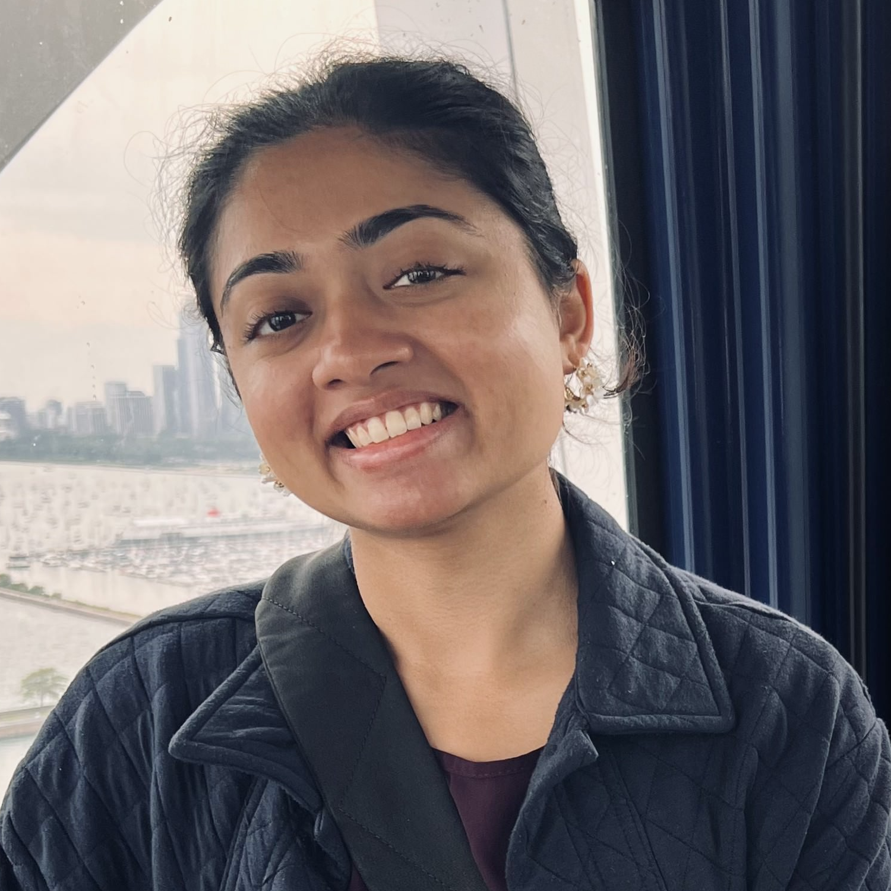

ss3779 at princeton dot edu
I'm a Ph.D. candidate in the Quantitative and Computational Biology program at Princeton University, advised by Prof. Michelle Chan. I am broadly interested in combining computational and in-vitro approaches to better understand the dynamics of cell fate decisions during mammalian development.
In 2023, I graduated from the Indian Institute of Technology Bombay with a B.Tech in Computer Science and Engineering with honors and a minor in Biology. I was fortunate to work with Prof. Ganesh Viswanathan and Prof. Sandip Kar at IIT Bombay, and have interned with Prof. Shaon Chakrabarti at the Simons Centre at NCBS Bangalore, and Dr. Anton Goloborodko at the Vienna BioCenter. After graduating, I also spent a year as a software engineer at the Microsoft India Development Center in Hyderabad.
I am trained in the beautiful Indian classical dance Bharatanatyam, and enjoy practicing and performing regularly. When not working, you may also find me taking a long walk, crafting handmade gifts, trying out new recipes, or reading a novel. Please feel free to get in touch!